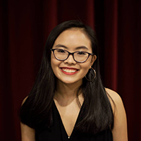

I am a Software Engineer on the Restaurants team at Square, and I graduated from Tufts University in 2021. I'm interested in software engineering, cybersecurity, and product management. I find space exploration and film fascinating, and I like to dabble in photography and Photoshop. I am also a big fan of the subway and cooking shows! I am based in New York City.


last updated: 7/29/21